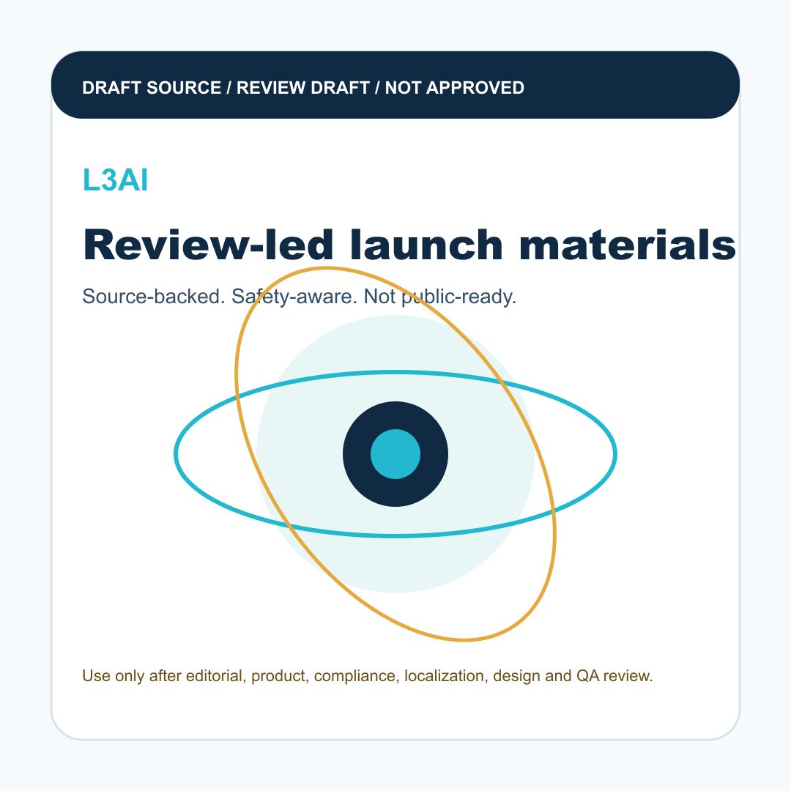

信息碎片化
用户需要在行情、钱包、产品、社群和内容渠道之间反复切换，很难快速判断哪些信息值得关注。

L3AI为什么需要 L3AI
用户需要在行情、钱包、产品、社群和内容渠道之间反复切换，很难快速判断哪些信息值得关注。
L3AI 用 AI 原生界面帮助用户整理信号、解释上下文、提示下一步，并把个人参与路径沉淀成可复盘的成长记录。
AI 能力
持续跟踪市场、用户状态和产品路径，不再要求用户自己阅读所有信息。
把图表、订单状态、风险边界和产品变化转化为更容易理解的上下文。
连接行为、结果、学习和成长，让用户每次回来都能看到自己的变化。
统一操作层
用户路径
安全边界